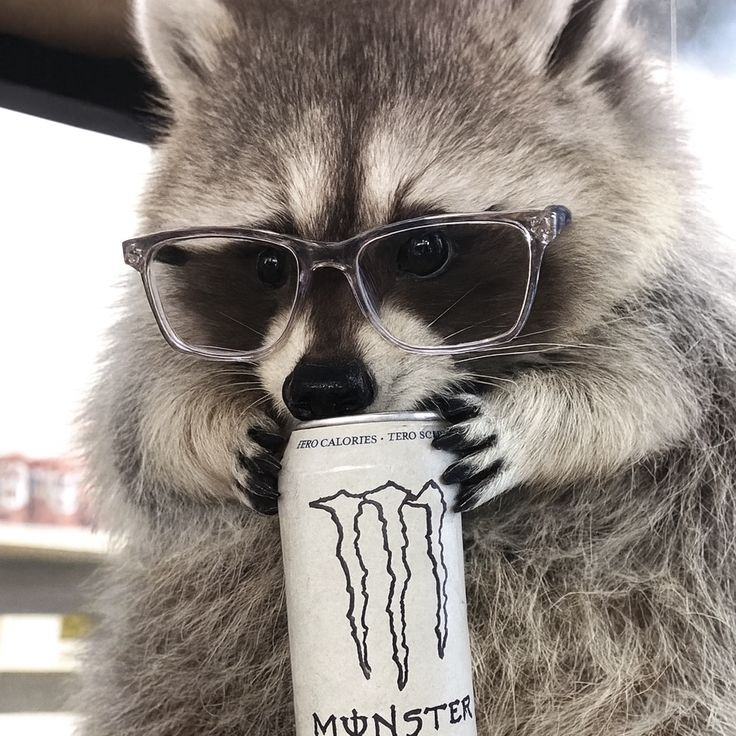
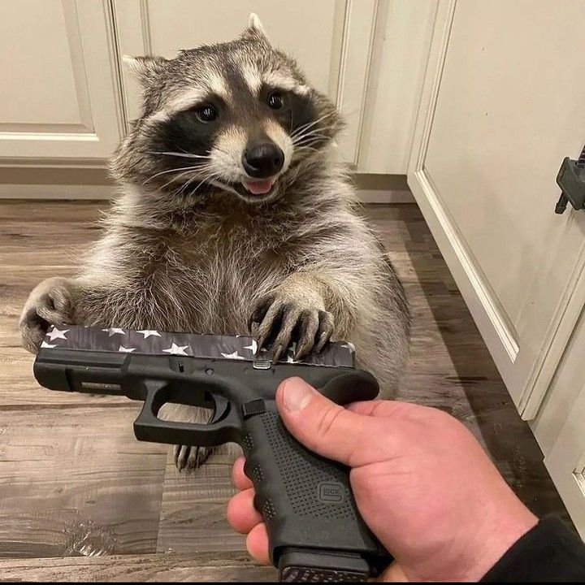
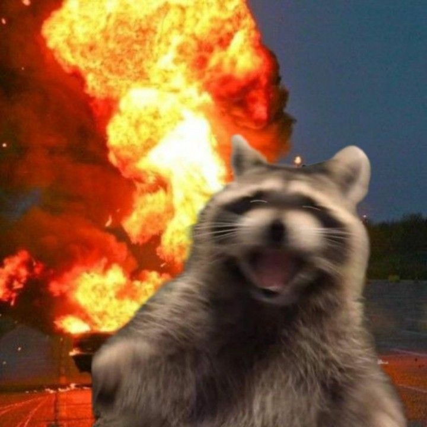

Tambien te dejamos una pequeña guia de nuestros queridos mapaches para que conozcas sus nombres, ocupaciones y como identificarlos, que te diviertas.
El patron, alias Pablo, es el jefe del lugar aunque tiene cara amable si lo miras mal te despedira aunque ni si quiera trabajes aqui...de alguna manera.
El recaudador, alias Robin Hood, es el contador de la empresa jamas se le pasa una moneda ni una lechuga en el suelo, que su aspecto no te engañe porque a la minima desaparecio tu comida y tal vez tu billetera con el pretexto de darselo a los necesitados (el mismo).

El inspector, alias Blanco, la verdad nadie sabe que hace aqui un dia llego y de alguna manera fue contratado, la leyenda dice que lo unico que hace es verificar que las sombras sigan siendo oscuras, aunque hay que decir que lo hace bastante bien a dia de hoy nunca hemos visto una sombra clara. Por cierto ni si quiera le gusta el cafe solo bebe bebidas energeticas ironico ¿no?

El de seguridad, alias Bond, James Bond (el insiste en llamarlo asi) es el encargado de mantener la seguridad y el orden en el local con sus garras y dientes, aunque una vez alguien le regalo una pistola lo cual fue una pesima idea ya que asalto la pizzeria de enfrente, porfavor no le den nada cercano a un arma de nuevo.

El limpiador, alias Burbuja, este ser por mas tierno que parezca es un criminal de guerra en potencia se encarga de mantener limpio todo el establecimiento aunque la ultima vez para lograrlo exploto el lugar porque segun el si no hay lugar que limpiar entonces su trabajo ya esta hecho ¿porque lo contratamos de nuevo despues de la ultima vez? ¿porque no esta preso? nadie lo sabe.